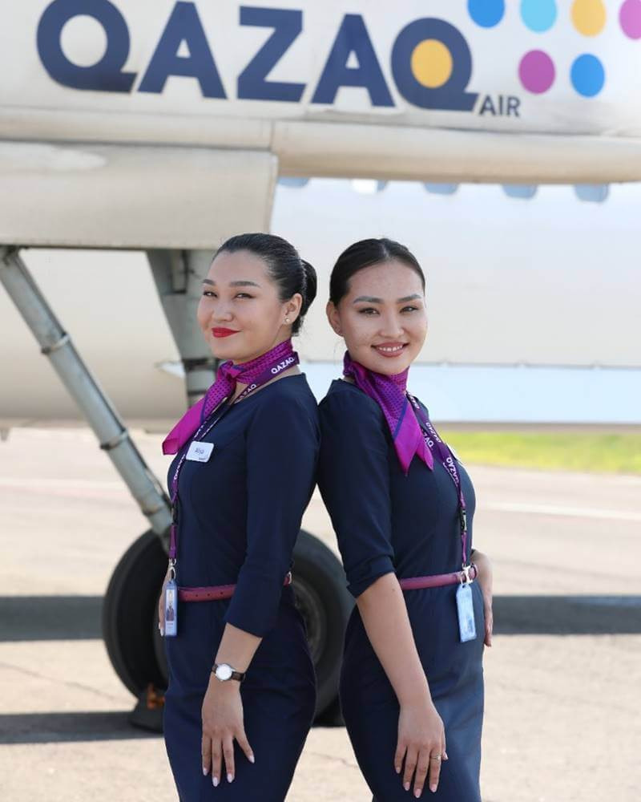
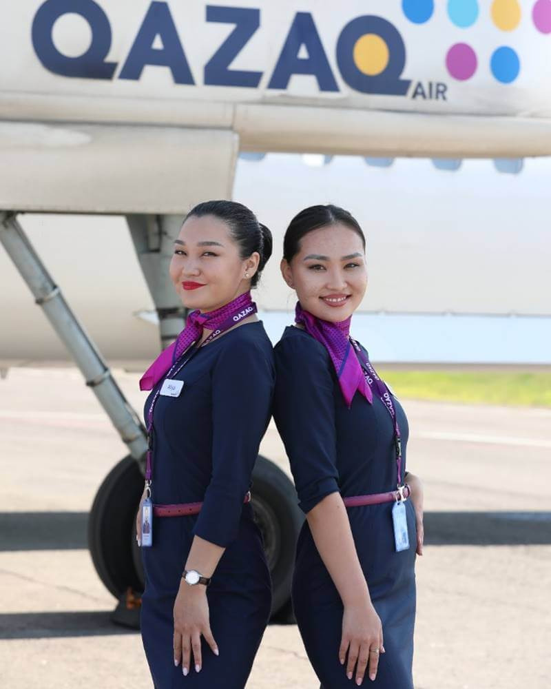

📅 Құрылған жылы: 2001 жылғы 29 тамыз
👤 Құрылтайшылар: Қазақстан Үкіметі (51%), BAE Systems (49%)
🏢 Штаб-пәтері: Алматы, Қазақстан
🛫 Негізгі хабтар: Алматы, Астана
🌍 Қамту аумағы: 21 ел, 94 бағыт
Air Astana – Қазақстанның басты әуе компаниясы, жоғары сервис деңгейімен және қауіпсіздігімен танымал. Компания Қазақстанның Тұңғыш Президенті Нұрсұлтан Назарбаевтың бастамасымен құрылып, алғашқы рейсін 2002 жылғы 15 мамырда орындады. Компания халықаралық стандарттарды ұстанады және тұрақты түрде Skytrax рейтингінде 4 жұлдызға ие болып келеді.
Air Astana 94 бағыт бойынша ұшады, оның ішінде алыс халықаралық рейстер бар.
🌍 Топ-5 халықаралық бағыттар:
🇬🇧 Лондон, Ұлыбритания (LHR)
🇹🇷 Стамбул, Түркия (IST)
🇰🇷 Сеул, Оңтүстік Корея (ICN)
🇩🇪 Франкфурт, Германия (FRA)
🇦🇪 Дубай, БАӘ (DXB)
🏡 Топ-5 ішкі бағыттар:
Алматы – Астана
Астана – Шымкент
Алматы – Атырау
Астана – Ақтау
Алматы – Түркістан
Air Astana 40 заманауи ұшаққа ие:
✈ Airbus A320neo, A321neo, A321LR – 24 ұшақ
✈ Boeing 767-300ER – 3 ұшақ
✈ Embraer E190-E2 – 13 ұшақ
Флоттың орташа жасы – 5 жыл, бұл оны әлемдегі ең жас флоттардың біріне айналдырады.
🏆 Орталық Азияның үздік әуе компаниясы (Skytrax, 2012–2024)
🏆 Қауіпсіздік пен сервис бойынша 4 жұлдыз
🏆 Халықаралық әуе көлігі қауымдастығының (IATA) мүшесі
📌 Онлайн сайт арқылы: airastana.com
📌 Мобильді қосымшалар арқылы:
📱 iOS
📱 Android
✈ Air Astana – аспандағы жайлылық кепілі! 🛫✨
📅 Құрылған жылы: 1997
👤 Құрылтайшылар: Жеке авиакомпания
🏢 Штаб-пәтері: Шымкент, Қазақстан
🛫 Негізгі хабтар: Шымкент, Астана, Алматы
🌍 Қамту: 15 ел, 38 бағыт
SCAT Airlines — Қазақстандағы ең ірі жеке әуе тасымалдаушылардың бірі. Ішкі және халықаралық тұрақты рейстермен қатар чартерлік тасымалдарға маманданған. Компания өз флотын үнемі жаңартып, маршруттық желіні кеңейтіп отырады, қауіпсіздік бойынша халықаралық сертификаттар (IOSA) алады.
SCAT 38 бағыт бойынша Қазақстан ішінде және шетелге ұшады.
🌍 Топ-5 халықаралық бағыттар:
🇹🇷 Анталья, Түркия (AYT)
🇦🇪 Шарджа, БАӘ (SHJ)
🇷🇺 Мәскеу, Ресей (VKO)
🇬🇪 Батуми, Грузия (BUS)
🇰🇬 Ош, Қырғызстан (OSS)
🏡 Топ-5 ішкі бағыттар:
Астана – Алматы
Шымкент – Астана
Алматы – Орал
Астана – Ақтау
Шымкент – Атырау
SCAT 30 түрлі типтегі ұшаққа ие:
✈ Boeing 737-300/700/800/900 – 20 ұшақ
✈ Boeing 757-200 – 2 ұшақ
✈ Boeing 767-300ER – 2 ұшақ
✈ Bombardier CRJ-200 – 6 ұшақ
Флоттың орташа жасы – 7 жыл.
🏆 IOSA халықаралық қауіпсіздік сертификаты
🏆 Маршруттық желінің серпінді дамуы
🏆 Қазақстандағы чартерлік рейстердің көшбасшысы
📌 Онлайн сайт арқылы: scat.kz
📌 Мобильді қосымшалар:
📱 iOS
📱 Android
✈ SCAT – қолжетімді бағадағы жайлы ұшулар! 🛫
📅 Құрылған жылы: 2015
👤 Құрылтайшы: «Самұрық-Қазына» ұлттық әл-ауқат қоры
🏢 Штаб-пәтері: Астана, Қазақстан
🛫 Негізгі хаб: Астана
🌍 Қамту аймағы: 17 ішкі бағыт
Qazaq Air — Қазақстанда өңіраралық әуе қатынасын дамыту мақсатында құрылған авиакомпания. Компания заманауи турбовинтті ұшақтарды пайдаланады, бұл кіші қалаларға рейстерді орындауға мүмкіндік береді.
🏡 Топ-5 ішкі бағыттар:
Астана – Петропавл
Астана – Өскемен
Астана – Қостанай
Астана – Семей
Алматы – Талдықорған
✈ De Havilland Canada Dash 8-Q400 – 5 ұшақ (78 орын)
🏆 Орталық Азиядағы үздік авиакомпания (Skytrax, 2012–2024)
🏆 Қауіпсіздік пен сервистің 4 жұлдызды рейтингі
🏆 Халықаралық әуе көлігі қауымдастығының (IATA) мүшесі
📌 Ресми сайт арқылы: flyqazaq.com
✈ Qazaq Air – Қазақстан аймақтарына қолжетімді әуе рейстері! 🛫
 

📅 Құрылған жылы: 2002
👤 Құрылтайшы: «Самұрық-Қазына» ұлттық әл-ауқат қоры
🏢 Штаб-пәтері: Астана, Қазақстан
🚆 Темір жолдардың жалпы ұзындығы: 16 000 км-ден аса
🌍 Қамту аймағы: Қазақстан аумағы және халықаралық бағыттар
«Қазақстан темір жолы» ұлттық компаниясы» АҚ — Қазақстандағы теміржол тасымалдарының негізгі операторы. Компания жолаушылар мен жүк тасымалын қамтамасыз етеді, елдің барлық ірі қалалары мен өңірлерін байланыстырады. ҚТЖ — Еуропа, Азия және Ресей арасындағы халықаралық транзиттік дәліздерде маңызды буын болып табылады, логистиканы тиімді ұйымдастырады.
ҚТЖ күнделікті жолаушылар тасымалын еліміздің түкпір-түкпірінде және шетелдік бағыттарда орындайды.
🌍 Халықаралық бағыттардың ТОП-5:
🇷🇺 Астана – Мәскеу
🇨🇳 Алматы – Үрімші
🇺🇿 Астана – Ташкент
🇷🇺 Алматы – Новосібір
🇰🇬 Алматы – Бішкек
🏡 Ішкі бағыттардың ТОП-5:
Астана – Алматы (Тальго)
Астана – Шымкент
Алматы – Атырау
Астана – Ақтау
Қостанай – Павлодар
Қазақстанда 100-ден астам теміржол станциясы бар, олардың ішіндегі ең ірілері:
🏢 ТОП-5 вокзал:
🚆 Нұрлы Жол (Астана) — ең ірі вокзал, 2017 жылы ашылған
🚆 Алматы-1 және Алматы-2 — оңтүстік астананың басты вокзалдары
🚆 Шымкент — оңтүстік өңірдің көлік торабы
🚆 Атырау — батыс аймақтың маңызды орталығы
🚆 Қарағанды — орталық Қазақстандағы басты станция
🚄 Тальго («Турист» және «Бизнес») — жайлылығы жоғары заманауи жылдам пойыздар
🚆 Кәдімгі пойыздар — купе және плацкарт вагондар
🚊 Электр пойыздар — қысқа бағыттарға арналған аймақтық маршруттар
📌 Ресми сайт арқылы: bilet.railways.kz
📱 Мобильді қосымшаларда:
iOS
Android
🚆 Теміржол көлігі – сенімді әрі ыңғайлы саяхат түрі! ✨
.png) Қоғамдық көлік
Қоғамдық көлік
Қазақстандағы қоғамдық көлік — бұл автобустар, троллейбустар, трамвайлар, метро және қалааралық маршруттар. Олар қалалар ішінде де, өңірлер арасында да ыңғайлы қозғалысты қамтамасыз етеді.
🚏 Қайда жұмыс істейді? Барлық ірі және орташа қалаларда, сондай-ақ елді мекендер арасында.
💳 Төлем әдістері: Қолма-қол, банк картасы немесе мобильді қосымшалар арқылы.
📌 Автобус желісі ең дамыған қалалар:
Ірі қалаларда ONAI (Алматы, Астана), Tulpar Card (Шымкент), AktobeBus (Ақтөбе) және басқа жүйелер арқылы қолма-қол емес төлем жүйесі жұмыс істейді.
⚡ Троллейбустар тек Алматыда жұмыс істейді және бұл — экологиялық қозғалыс түрі.
🚊 Трамвайлар тек Павлодарда ғана бар – бұл елдегі жалғыз трамвай желісі.
📅 Ашылған жылы: 2011
🚉 Станциялар саны: 11
📍 Ұзындығы: 13,4 км
💳 Төлем: ONAI, банк карталары, QR-кодтар
Алматы метросы — Қазақстандағы жалғыз метро. Ол қаланың орталығын оңтүстік аудандармен байланыстырып, кеңейіп келеді.
✅ Маршруттар мен төлемге арналған қосымшалар:
Қазақстандағы такси — қалалар ішінде жылдам әрі ыңғайлы қозғалыс құралы. Мобильді технологиялардың дамуына байланысты, елде такси шақыруға арналған қосымшалар кеңінен қолданылады. Олар арқылы бірнеше минутта көлікке тапсырыс беруге, көліктің түрін таңдауға және төлемді қосымша арқылы жасауға болады.
Қазақстандағы ең танымал қызметтердің бірі. Стандарт және комфорт класы, алдын ала тапсырыс беру, жол ақысының болжамды есебі бар.
📱 iOS
📱 Android
Алматы, Астана және Шымкент қалаларында қолжетімді халықаралық қызмет. Түрлі көлік түрлері және ыңғайлы интерфейс.
📱 iOS
📱 Android
Төмен бағамен және әртүрлі көлік нұсқаларымен танымал қызмет: эконом, комфорт, XL. Алматы және Астанада жұмыс істейді.
📱 iOS
📱 Android
Жолаушы өз бағасын ұсынады – жүргізуші қабылдай ма, жоқ па, өзі шешеді. Жол жүру құнына толық бақылау.
📱 iOS
📱 Android
Көлік таңдау: көп жағдайда экономдан бастап жайлы кластарға дейінгі көліктер ұсынылады.
Төлем: төлемді мобильді қосымша арқылы банк картасымен, қолма-қол ақшамен немесе электронды әмиянмен жасауға болады.
Қауіпсіздік: барлық қызметтерде маршрутты бақылау және жүргізушіні бағалау мүмкіндігі бар. Сондай-ақ, жолаушылар мен жүргізушілерге арналған сақтандыру қарастырылған.
Қосымша мүмкіндіктер: кейбір қызметтер әуежайға трансфер, тауар жеткізу, тіпті үй жануарларына арналған такси секілді қосымша опциялар ұсынады.